every campus, one look
Campus spaces
Twenty kinds of space make a campus of ours, in three families. Each has one clear purpose, the same calm look and the same level of care, in every country.
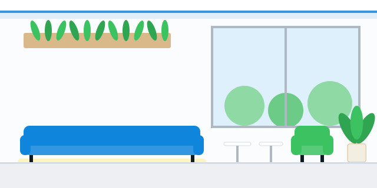
four ideas
What guides every space
- collaboration
Together we make progress
Open spaces let learners, mentors and visitors meet without an appointment. Good teamwork starts with people seeing each other.
- function
Reduce to what matters
Every space has one clear purpose. Furniture is chosen because it works well and looks calm, not because it fills a room.
- adaptability
Flexible but consistent
A set of space types fits any size of campus. The same signs, colours and furniture style make every campus feel like ours, anywhere in the world.
- atmosphere
Open, light and simple
White walls, daylight, plants and one colour accent. Healthy, safe rooms with the best equipment we can give.
family 1 of 3
Learn and work
Six spaces for study and project work, from open to silent.
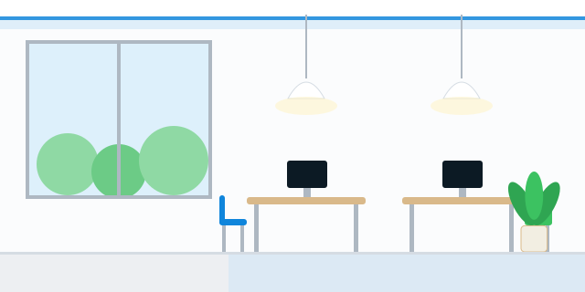
focus: mediumOpen learning studio
The main room of a campus. Learners work at their own desk or in pairs, with clear sight lines and short walks to the support spaces. A soft floor marks each work island and keeps the sound down.
Feels: open, light, focused.
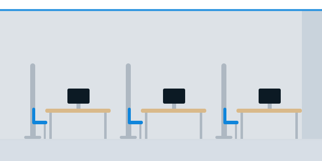
focus: highSilent area
Single desks with screens between them for deep study. No calls and no group talk. Sound-absorbing curtains, carpet and furniture keep it quiet, and the carpet is a different shade so everyone sees where the quiet starts.
Feels: focused, calm.
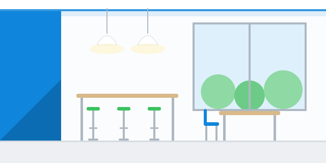
focus: low to mediumTouch-down station
High tables with stools, next to the open studio, for a short task, a quick check with a mentor or a small team stand-up. Every station has power and a seated-height place beside it.
Feels: open, flexible.
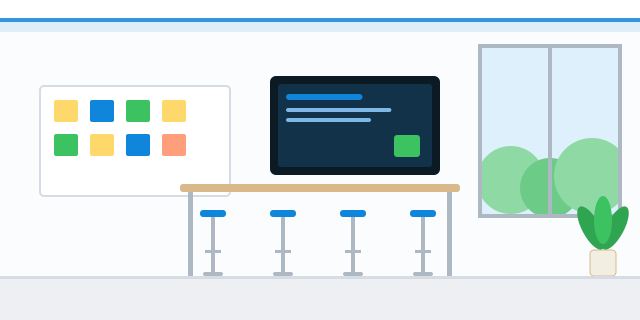
focus: mediumProject area
A room a team can keep for hours or days. One shared high table, a large screen, a writable wall and blinds to darken the room. This is where capstone projects and BIM models are built.
Feels: light, focused.
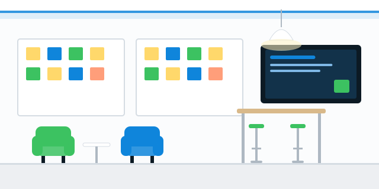
focus: highBrainstorm area
Built for ideas. Walls you can write on, sticky notes, an interactive screen and furniture that moves. Teams stand more than they sit.
Feels: light, lively.
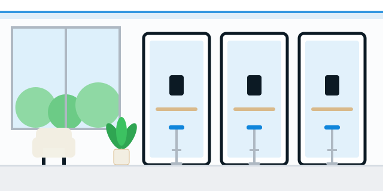
focus: mediumCall booth
A small sound-absorbing booth for one or two people, for an online class, a mentor call or an interview. Very simple inside: a shelf, a stool, a light and a socket.
Feels: light, private.
family 2 of 3
Meet
Five spaces for people to meet, from two people to the whole campus.
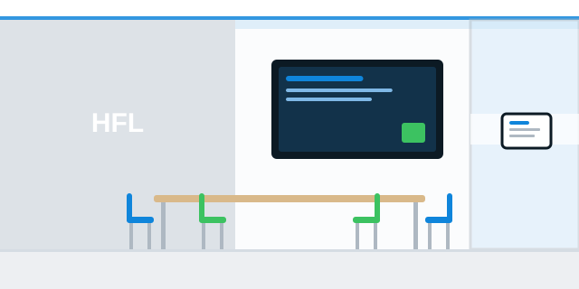
focus: medium to highMeeting room
Where families, partners and employers are received. Good sound, a screen that connects in one step, comfortable chairs and our name in white on a grey wall.
Feels: welcoming, light.
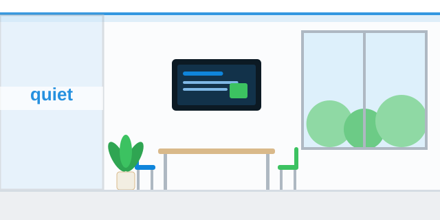
focus: medium to highQuiet room
A closed room for two to four people: tutoring, a confidential talk or a video conference. The door closes, the sound stays in and the desk is good for long sessions.
Feels: light, focused, quiet.
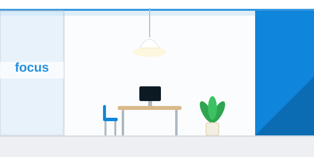
focus: highSmall quiet room
A one-person room for an exam, an assessment or an hour of deep work. One desk, one chair, one lamp, nothing else.
Feels: calm, private.
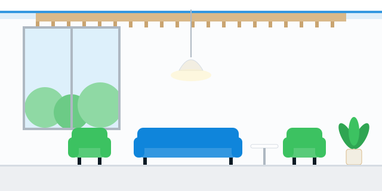
focus: low to mediumInformal meeting area
Soft seats and low tables under a timber ceiling, for a talk that was not planned. Also good for reading, a project update or a short call.
Feels: comfortable, light.
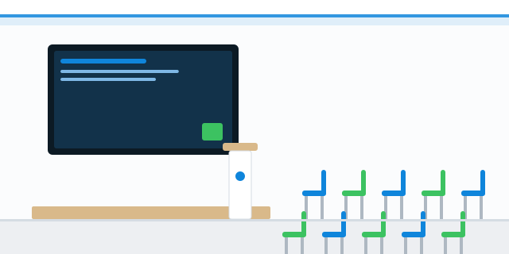
focus: medium to highAssembly area
The room where the whole campus meets: open days, graduations, talks and demo days. A low stage, a lectern, a large screen, chairs that stack and blinds that darken the room.
Feels: proud, light, focused.
family 3 of 3
Support
Nine spaces that make the day easy: storage, food, rest and welcome.
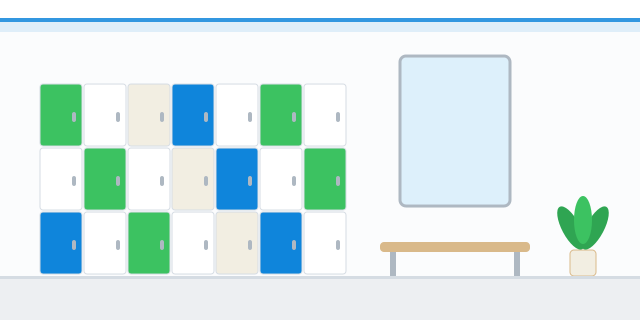
focus: supportLockers and coats
Each learner has a place for a bag, a coat and a helmet, close to the studio. A bench and a mirror make it easy.
Feels: light, practical.
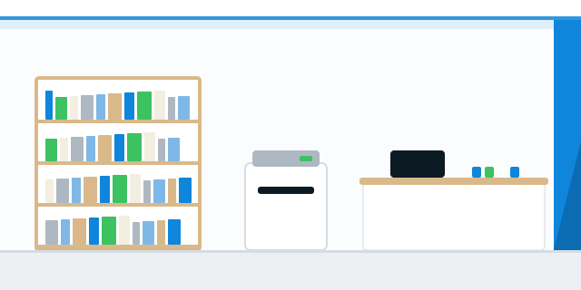
focus: supportPrint and make point
Printer, scanner, paper and tools in one tidy place near the studio. Storage keeps cables and supplies out of sight.
Feels: tidy, practical.
- focus: low
Lounge
The first seat a visitor takes and the place learners gather between sessions. Soft seating lit from below, plants, art on the wall and a view outside.
Feels: open, inviting.
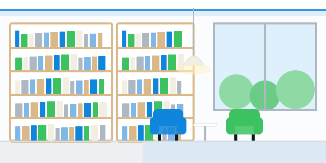
focus: medium to highLibrary
Shelves, soft chairs and reading tables with their own power. No loud talk and no calls. The books are free to read on campus.
Feels: focused, comfortable, quiet.
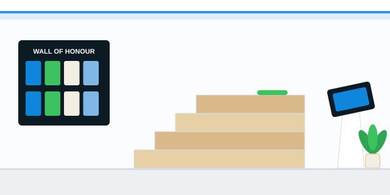
focus: lowHallway and learning steps
A hallway is not wasted space. Wide timber steps make a small auditorium, a wall of honour shows what learners have achieved and a touch screen helps visitors find their way.
Feels: open, light.
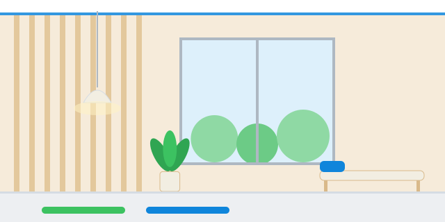
focus: restRelaxation room
A warm, quiet room for a break: yoga, stretching, meditation or ten minutes with closed eyes. Timber, soft light and a view of green.
Feels: warm, calm.
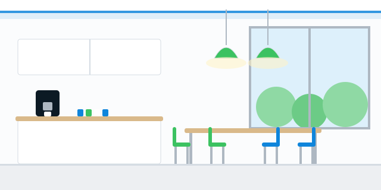
focus: lowCoffee corner and lunch area
The social centre of the campus. Learners prepare lunch, share a table and meet people from other courses. Outside meal times the tables are used for light work.
Feels: warm, light.
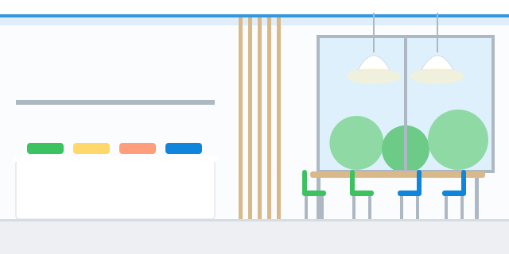
focus: lowCafeteria
A clear serving line in a logical order, then long tables, tables for four and single seats. Screens that let light through give some privacy. With movable furniture the same room serves as the assembly area.
Feels: light, open, clear.
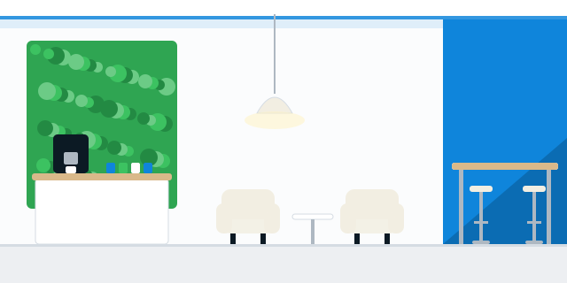
focus: lowCoffee bar
A neutral place to meet a visitor over a good coffee. Warm light, a green wall and, to one side, a few high-focus seats for someone working alone.
Feels: warm, comfortable.
the look
How you know it is our campus
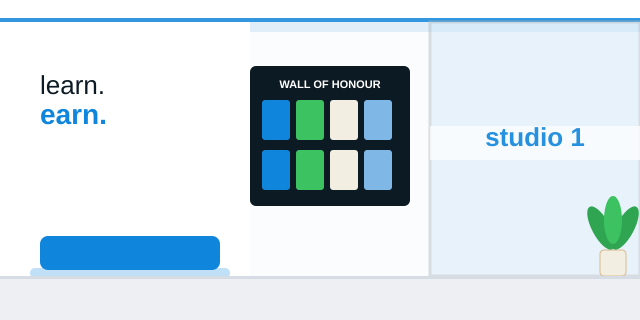
- White walls and ceilings. One wall in a room may carry grey or our blue.
- Our blue arrives through light: a thin line at the ceiling or under a bench.
- The name of each room is written on its glass, in one or two words.
- Our values are written large on one wall near the entrance.
- A wall of honour shows learner achievements, on a screen or in frames.
- Light timber, white and grey for furniture. No dark or black wood.
- Plants in every shared space.
- Signs use one typeface and one layout on every campus.
- Touch screens help visitors find a room, a course or a person.
four steps
How a campus fit-out starts
- Listen and plan. Ask learners, mentors and staff how they want to work. Collect every need before drawing anything.
- Create a space. Start with the floor plan. Decide which spaces are needed, which must be quiet, and keep walks to the support spaces short. Every space must be reachable step-free.
- Design and implement. Choose materials, furniture, light and technology. Set one colour concept, then add signs and plants.
- Evaluate and adjust. Ask for feedback after opening and change the plan when it helps. A new layout can bring new energy.
model it
Use these spaces in your BIM project
- Pick a campus type in campus builds and place these spaces in its modules.
- Use the codes of the element library for walls, glass, furniture and services.
- Follow the LOD stage plan and keep the model in your portfolio.
Learning material, not a design or safety instruction. Real buildings are designed and signed off by licensed professionals under local rules.